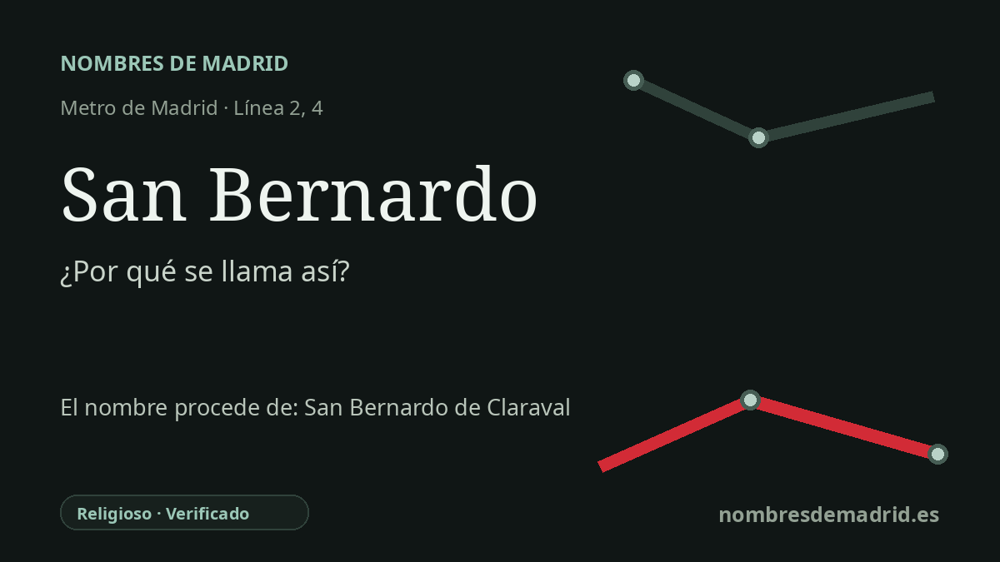

Publicado el · Investigación de Nombres de Madrid · Cómo verificamos cada origen · 6 fuentes consultadas
Respuesta rápida
La estación de San Bernardo recibió el nombre de la antigua glorieta de San Bernardo, hoy glorieta de Ruiz Giménez, y de la cercana calle de San Bernardo. El nombre de la calle madrileña procede de un antiguo hospital y convento de San Bernardo, vinculado a san Bernardo de Claraval, no del célebre monasterio de las Bernardas de Alcalá de Henares.
La historia del nombre
La estación de San Bernardo toma su nombre de la antigua glorieta de San Bernardo, bajo la cual se construyó. Metro de Madrid señala que esa plaza pasó a llamarse glorieta de Ruiz Giménez en 1934, en honor del ministro y alcalde de Madrid fallecido aquel año, pero la estación conservó el topónimo anterior.
Detrás de la glorieta está la calle de San Bernardo, una de las vías históricas de salida hacia el norte desde el centro de Madrid. En la tradición urbana fue la calle Ancha de San Bernardo, y la documentación patrimonial oficial recuerda que en el plano de Teixeira del siglo XVII ya aparecía como calle de Convalecientes o de San Bernardo.
La interpretación mejor respaldada del nombre madrileño es local: un hospital y convento de San Bernardo levantado en esa calle en el siglo XVI. Por eso la estación tiene una etimología religiosa vinculada a san Bernardo de Claraval, reformador medieval del Císter, aunque la cadena del nombre pasa por una institución del entorno, la calle, la glorieta y finalmente el Metro.
San Bernardo fue también una de las grandes direcciones académicas de Madrid. El Noviciado de los jesuitas estuvo en la calle Ancha de San Bernardo desde comienzos del siglo XVII, y la Universidad Complutense describe el posterior Paraninfo y conjunto universitario de la calle San Bernardo 49 como construido sobre el antiguo solar del noviciado, con obras principales entre 1842 y 1855 y apertura del Paraninfo en el curso 1851-1852.
El célebre monasterio cisterciense de San Bernardo fundado en 1617 por el cardenal Bernardo de Sandoval y Rojas, con su destacada iglesia de planta oval, está en Alcalá de Henares, en la plaza de las Bernardas. Es importante para la presencia de san Bernardo en la Comunidad de Madrid, pero no es el origen del nombre de esta estación de Metro.